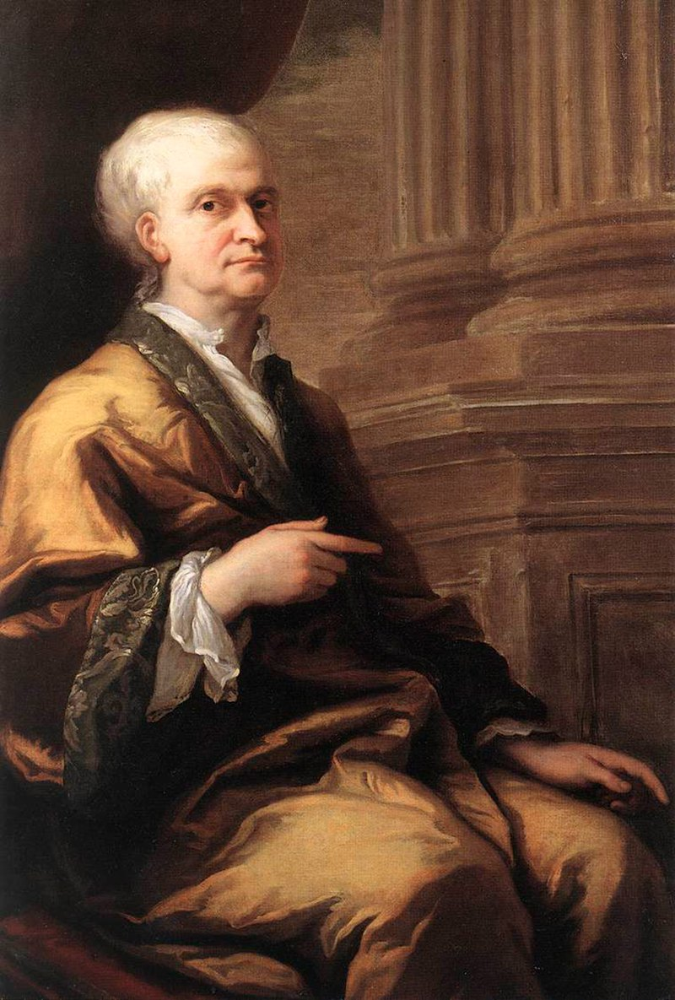
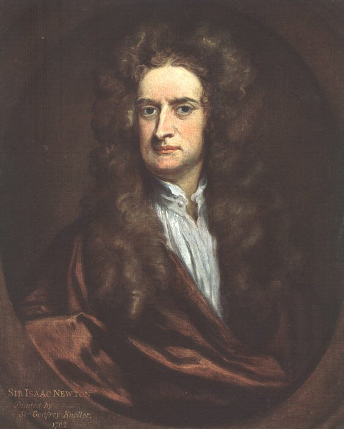
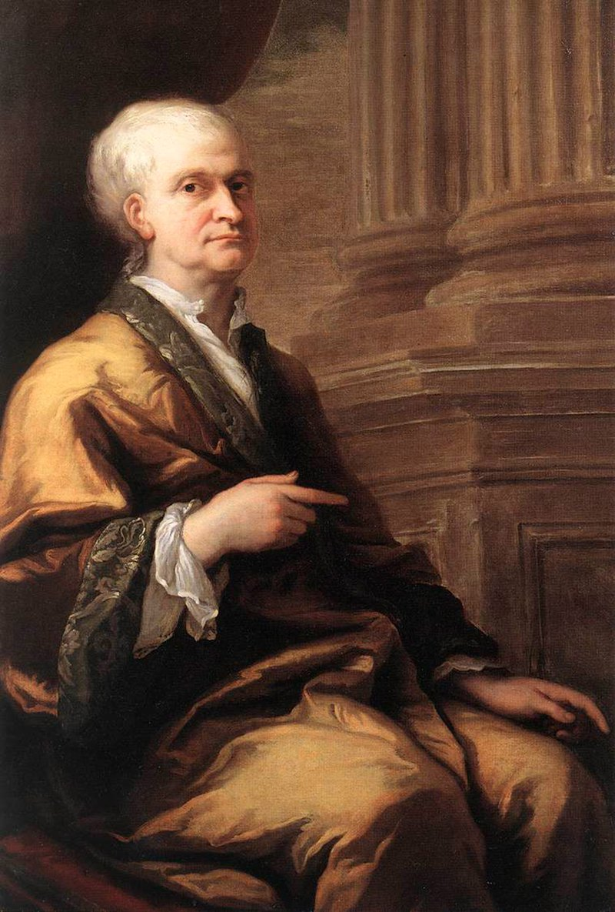
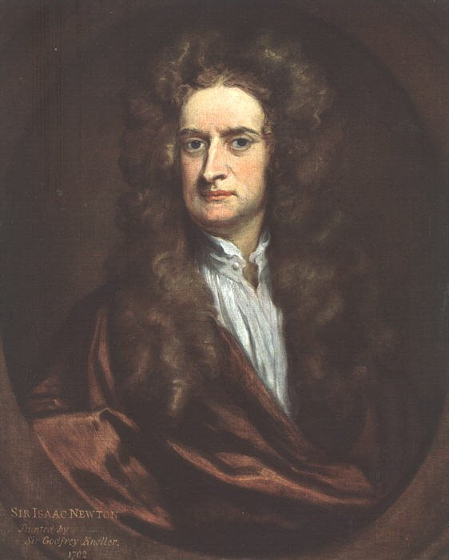

Alchemy
 



Isaac Newton, known for his groundbreaking scientific contributions, also dedicated a significant portion of his writings to alchemy, with about one million words covering the subject. Many of his alchemical texts were copies of other manuscripts, supplemented with his own annotations. Alchemy at the time was a blend of artisanal knowledge and philosophical speculation, often expressed in allegorical and coded language to protect its secrets. Some of Newton's writings on alchemy were considered controversial and potentially heretical by the church.
After spending years cataloging Newton's papers, Cambridge University retained only a small selection, returning the majority to the Earl of Portsmouth. In 1936, these papers were auctioned, with economist John Maynard Keynes among the buyers. Keynes eventually reconstructed a significant portion of Newton’s alchemical writings and later donated them to Cambridge University. Currently, all of Newton’s known works on alchemy are being digitized by Indiana University through the project "The Chymistry of Isaac Newton."
Newton also explored medical and esoteric subjects, including the treatment of the plague. In 2020, an auction revealed his handwritten notes analyzing Jan Baptist van Helmont’s book De Peste, written while Newton was in Cambridge during the 1665–1666 London plague outbreak. His notes describe an unusual remedy involving a toad, whose dried remains were used to create lozenges believed to counteract the disease. This insight reflects Newton’s deep engagement with unconventional scientific and medical theories, illustrating his lesser-known but extensive interest in alchemy and early chemistry.